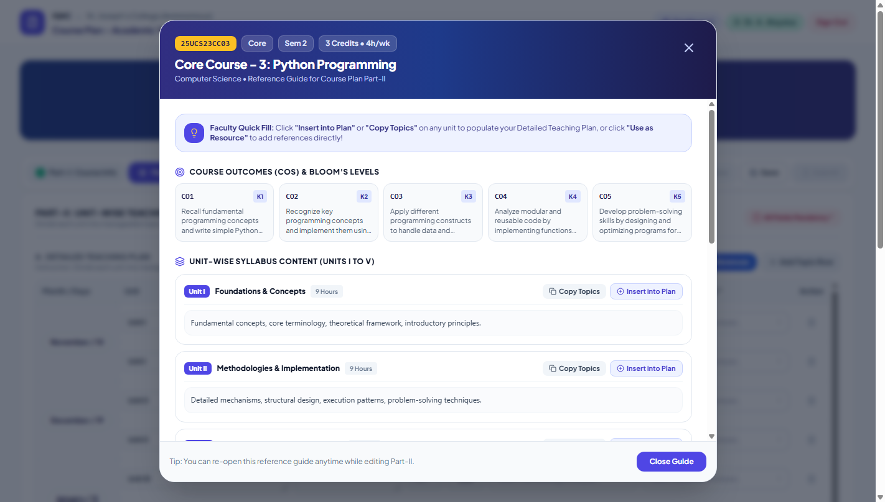
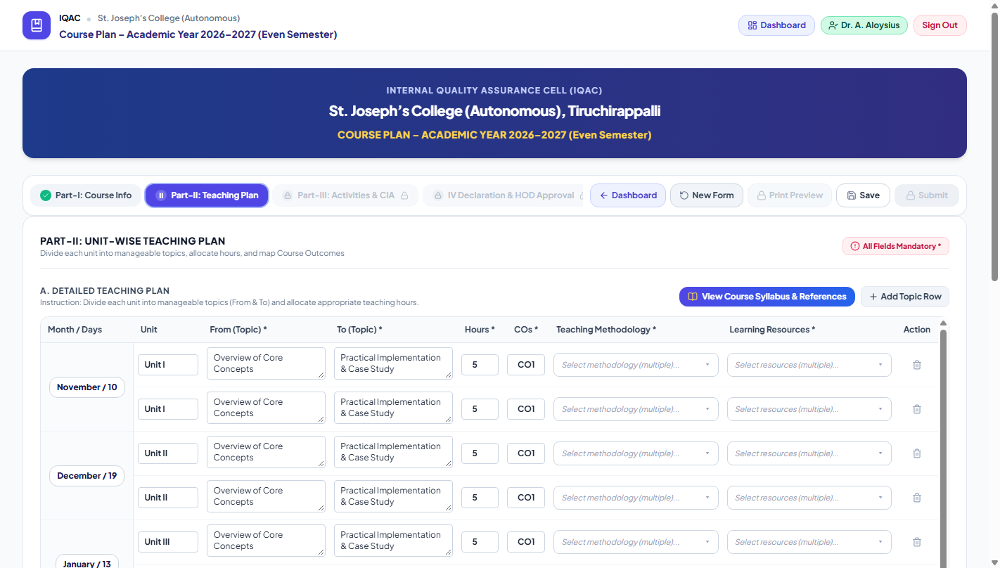
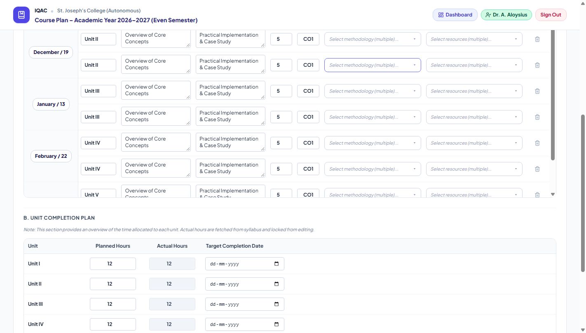
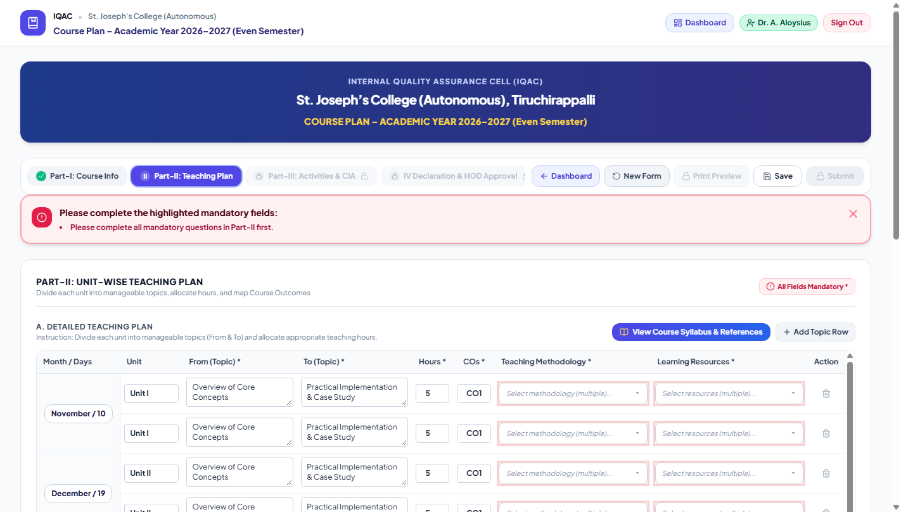
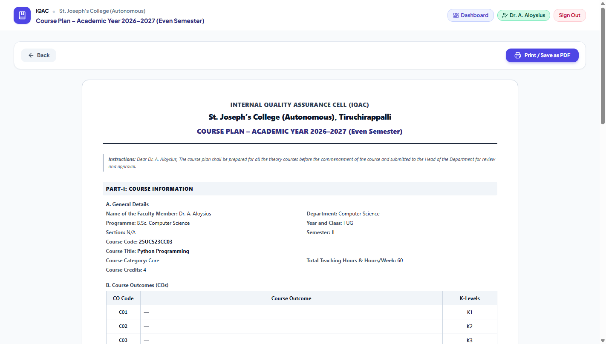
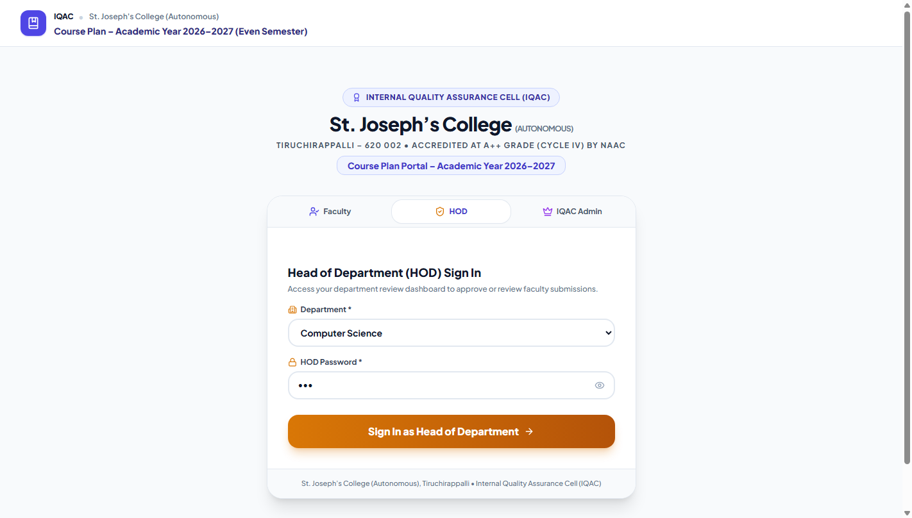

St. Joseph’s College (Autonomous)
Tiruchirappalli – 620 002 • Accredited at A++ Grade (Cycle IV) by NAAC
Academic Year 2026–2027 (Even Semester: Semesters II, IV & VI)
1 Portal Access & Role-Based Sign In
Access the portal directly from any web browser on desktop or mobile: https://sjciqac.frontierwox.in/course-plan/.

Figure 1.1: Institutional Login Portal with Faculty, HOD, and IQAC Admin role selection.
How Faculty Sign In:
- Select the Faculty tab.
- Choose your Department from the dropdown list.
- Select your Name from the faculty registry.
- Click Sign In as Faculty Member to proceed directly to your course plans dashboard.
2 Faculty Dashboard Overview
The dashboard is your personal hub to view all course plans, initiate new ones, and access institutional reporting.

Figure 2.1: Faculty Dashboard displaying Course Plans list, Status filters, and quick action buttons.
3 Part-I: Course Information & Auto-Fetch from Syllabus
Part-I captures the course metadata and Course Outcomes (CO1 to CO6). You do not need to type course titles, credits, or outcomes manually!

Figure 3.1: General Details and Syllabus Course selection dropdown.

Figure 3.2: Instant auto-population of Course Outcomes (CO1–CO6) with Bloom's Taxonomy K-Levels.
How Auto-Fetch Works:
1. Select the Programme (e.g., B.Sc. Computer Science).
2. Select the Year and Class (I UG, II UG, III UG, I PG, II PG) and Section (A, B, C, N/A).
3. In Select Course (Auto-Fetch from Syllabus), pick your assigned course. The title, category, weekly hours, credits, and all 6 Course Outcomes mapped to Bloom's K-Levels populate immediately.
4 Part-II: Detailed Teaching Plan & Syllabus Guide

Figure 4.1: Interactive Syllabus Guide with "Insert into Plan" and "Use as Resource" one-click shortcuts.

Figure 4.2: Detailed Teaching Plan and Unit Completion Plan tables.
Teaching Plan Fields:
- Month / Working Days: e.g., November / 10, December / 19, January / 13, February / 22, March / 12.
- From Topic — To Topic: Sub-topics planned for that session.
- Teaching Hours: Actual lecture hours planned.
- Pedagogical Methodology: Experiential Learning, Problem-Based Learning, Collaborative Learning, Flipped Classroom, etc.
- Learning Resources: Standard Textbooks, PPT Slides, JosTEL LMS, or MOOCs.
5 Part-III: Learning Activities, Assessment Plan & ICT Integration

Figure 5.1: Student-Centric Learning Activities and Institutional CIA Assessment schedule.

Figure 5.2: Digital Resources & ICT Integration table (minimum 1 row mandatory).
Institutional CIA Assessment Rules:
- C1 JosTEL MCQ / Online Test: Locked with official marks (UG: 5m, PG: 7.5m, K1/K2).
- Mid Sem Test: Locked with official marks (UG: 10m, PG: 15m, K1–K4).
- End Sem Exam: Locked for semester-end summative evaluation.
- C2 Component (Flexible): Choose Assignment / Problem Solving / Creative Model / Mini Project (UG: 6m, PG: 7.5m).
- Library Referencing: (UG: 4m, K3).
6 Part-IV: Declaration & Submission to HOD

Figure 6.1: Declaration compliance check and Submit to HOD action button.
1. Verify the compliance statement.
2. Check the confirmation box.
3. Click Submit to HOD to submit for departmental review. You will receive an on-screen confirmation modal with immediate access to Print Preview.
7 Official IQAC Print Preview

Figure 7.1: Official IQAC Course Plan document formatted for A4 printing and PDF export.
Click Print Document to print directly or select Save as PDF in your browser's print dialog to archive or email a copy.
8 Teaching-Learning Practices, Assessment & E-Content Form

Figure 8.1: Dedicated form for innovative TL Practices, Assessment Components, and E-Content.
Course Code and Title dropdowns automatically display only your assigned courses. Complete Sections A, B, and C and click Save & Submit Details.
9 Head of Department (HOD) Monitoring & Approval Guide

Figure 9.1: HOD Sign-In with Department selection and password authentication.

Figure 9.2: Department Course Plan Control Room with metrics and action buttons.
HOD Actions:
1. In the course plans table, locate any submission marked Submitted.
2. Click Review Plan to view the complete lecture schedule, outcomes, and assessment plan.
3. Click ✓ Approve & Sign to digitally approve and publish to IQAC, or ↩ Return with Feedback to send revision notes to the faculty member.
10 General English & General Tamil Cross-Department Guide
Instructions for Department of English and Department of Tamil Faculty:
General Tamil (Part I - GL) and General English (Part II - GE) are taken by all undergraduate students across all 24 UG degree programmes in Semesters II & IV.
- Sign in under your home department (English or Tamil).
- Click + New Course Plan.
- In Programme, select the target student programme you teach (e.g., B.Sc. Computer Science, B.Com. Commerce, B.Voc. SD & SA, B.Sc. Mathematics).
- In Year and Class, choose I UG (Semester II) or II UG (Semester IV).
- In Select Course:
- Semester II (I UG): English faculty choose
25UEN22GE02A/B; Tamil faculty choose25UTA21GL02. - Semester IV (II UG): English faculty choose
GE04B(Science),GE04C(Commerce), orGE04A(Arts); Tamil faculty chooseGL04B(Scientific Tamil),GL04C(Business Tamil), orGL04A(Media Tamil).
- Semester II (I UG): English faculty choose